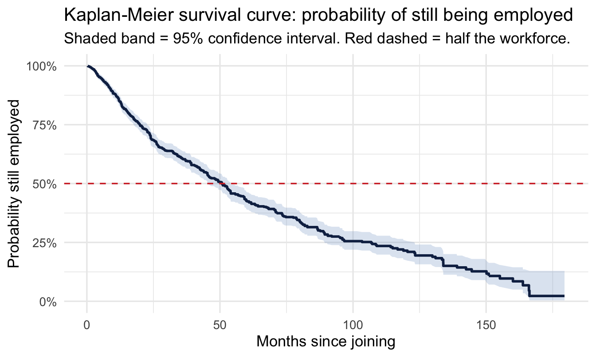
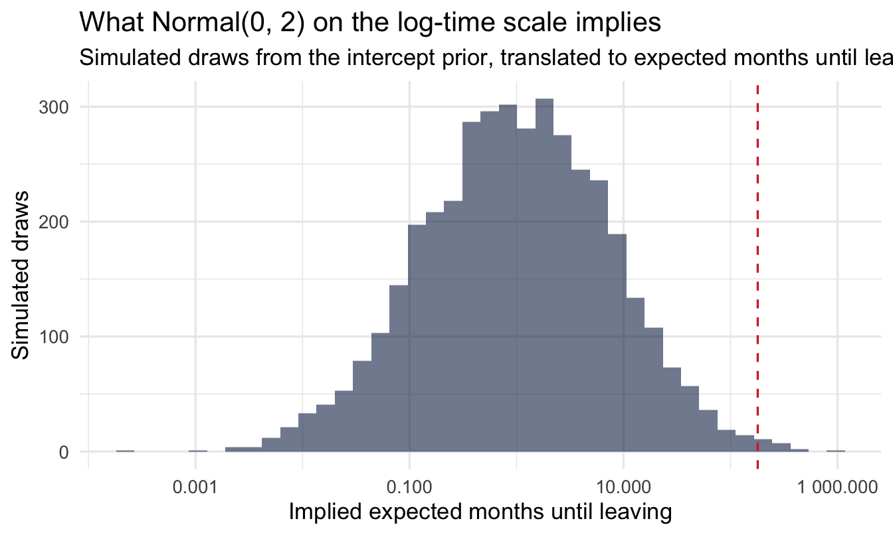
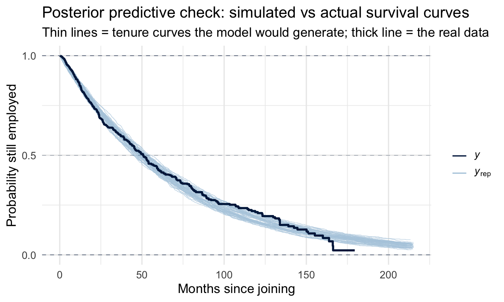
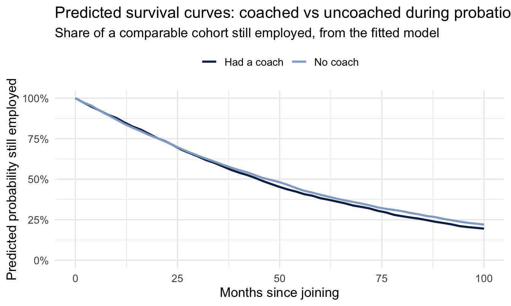
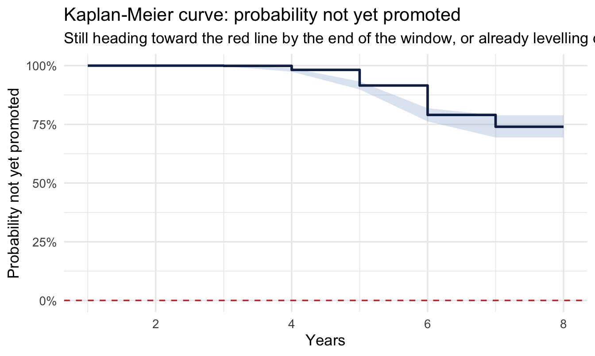

library(tidyverse)
library(survival)
library(brms)
library(tidybayes)
library(broom)
theme_set(theme_minimal(base_size = 13))
set.seed(2026)
# Shared colour tokens (matching theme/academicdesign*.scss). Navy and light
# navy carry the data; red is reserved for reference lines and annotations,
# never for a second data series.
navy <- "#122a52"
navy_light <- "#8fabd0"
red <- "#d32f2f"
# Real, anonymised HR data, originally shared by people analyst Edward
# Babushkin and redistributed on Kaggle under CC BY-NC-SA 4.0 (attribution,
# non-commercial, share-alike). Kaggle has no stable public download URL,
# so — to stay on the right side of that license without redistributing
# someone else's data ourselves — this book doesn't bundle a copy. Download
# it yourself from
# https://www.kaggle.com/datasets/davinwijaya/employee-turnover and save it
# as data/turnover.csv before running this chapter (see data/README.md).
turnover <- read_csv(
"data/turnover.csv",
locale = locale(encoding = "latin1"), # the source file has one non-UTF-8 byte
show_col_types = FALSE
) |>
mutate(profession = str_replace(profession, "Finanñe", "Finance")) # encoding artefact in the source file
# Reference levels chosen for readability: the most common recruitment
# channel and "no coach" become the baseline every coefficient is compared to.
turnover <- turnover |>
mutate(
traffic = fct_infreq(traffic),
coach = factor(coach, levels = c("no", "yes", "my head"))
)17 Survival Analysis: Time-to-Event in the Employee Lifecycle
Welcome
“Will this employee leave?” is the question most attrition work starts from. It’s the wrong question to start with, because it throws away the most useful part of the data: when. Someone who leaves after two months and someone who leaves after eleven years are both just “a leaver” to a yes/no model — but they’re very different stories, and a model that only sees yes/no can’t tell them apart.
This chapter introduces survival analysis: the family of methods built specifically to model time until an event, handling gracefully the one thing every attrition dataset has and most other methods choke on — people who haven’t left yet.
The request, as it actually arrives
The COO has seen an attrition number he doesn’t like and has already decided what to do about it:
“We’re at 18% and I want it under 12. I’ve got budget for one thing — either we fix onboarding or we fix the two-to-three year mark where I’m told people get itchy. Which one?”
The 18% is a single annual rate, and it cannot answer his question, because it has averaged away the only thing that distinguishes the two options: when people leave. A model that predicts whether someone leaves can’t answer it either — it has thrown the timing away too.
What he needs is the shape of the curve. If departures cluster in the first nine months, onboarding is the answer and the two-year theory is folklore. If the curve is flat early and steps down at 30 months, the opposite. This chapter is how you get that curve, and how you get it without discarding the majority of the workforce who simply haven’t left yet.
Analysis strategy
What we have. One row per employee, with how long they have been here and whether they have left. The second column is the awkward one: for most people the answer is “not yet”, which is not the same as “never” and must not be recorded as a zero.
What would answer the COO’s question. Not an attrition rate — that is the number that created the problem. What separates his two options is when the risk of leaving is concentrated, so the target is the shape of departure across tenure, with enough precision to say whether the early months and the two-to-three-year mark differ from each other at all.
What could go wrong. Three things, and they compound. People still employed carry real information about how long they have lasted, so dropping them would bias everything downward. The right-hand end of any curve rests on whoever has been here longest, which is always few people. And the most natural reading of a survival curve — it falls fastest early, so the risk must be highest early — is not what the curve says; we spend a section on why, because on this data it matters.
So the plan. Start with the assumption-light description of the whole population. Add a model, so we can compare groups while handling the “not yet” cases properly. Read the parameter that says whether risk rises or falls with tenure, rather than inferring it from the picture. Then check the model’s own predicted curve against the raw one.
What would make us stop. If that last check puts the model systematically above the data early and below it later, one shape is not enough to describe this hazard — and we report the comparison between groups rather than the absolute predicted times.
What you’ll be able to do by the end
- Explain censoring and why ignoring it biases your conclusions
- Read a Kaplan-Meier curve — the standard first look at time-to-event data
- Fit a Bayesian parametric survival model in
brmswith covariates - Interpret a survival model’s coefficients in plain business language
- Add a frailty term so groups — industries, sites, managers — get their own baseline risk, with Chapter 8’s partial pooling doing the work
- Recognise where the same technique needs adapting for a positive event (time-to-promotion) that not everyone will ever experience
17.1 Setup
turnover follows 1,129 employees at a real company, from their join date to whichever came first — leaving, or the last time they were observed: stag (months of tenure), event (did they leave, 1 = yes), traffic (how they were recruited — job site, referral, agency, and several other channels), coach (whether they had a coach during probation: none, a dedicated coach, or their own manager acting as coach), plus industry, profession, age, gender, greywage (salary fully declared to tax authorities or not), way (commute method), and five Big Five personality scores. This chapter uses traffic and coach; the rest are there for the exercises.
NoteWhere this data comes from
This is genuine company data, not a simulation — which is exactly the shape Chapter 1 promised more of: a join-to-departure duration for every employee, not a fixed observation window. Source: Edward Babushkin, redistributed on Kaggle, licensed CC BY-NC-SA 4.0 — attribution required, non-commercial use only, and any shared adaptation must carry the same license. That’s why this chapter asks you to download your own copy rather than shipping one inside the book.
17.2 The problem with yes/no
17.2.1 Censoring: the idea this whole chapter rests on
Take three employees from this data:
| Employee | Months of tenure recorded | Left? | What actually happened |
|---|---|---|---|
| A | 38 | Yes | Left the company after 38 months |
| B | 102 | No | Still employed when the data was pulled, at 102 months’ tenure |
| C | 7 | No | Still employed when they were last observed, at 7 months |
Important
B and C are not “successes” in the way a yes/no model would treat them. We don’t know whether they left a month later, or a decade later, or never. We only know they hadn’t left by the time we stopped watching. This is called right censoring, and it is the defining feature of almost all employee lifecycle data — everyone still employed at the moment you pull the data is censored, not a clean zero.
Throwing censored people away wastes most of your data (in this dataset, most employees haven’t left). Coding them as “0 = didn’t leave” and running ordinary logistic regression quietly assumes you know they’ll never leave, which you don’t. Survival analysis is built to use exactly this kind of incomplete information correctly.
17.3 A first look: the Kaplan-Meier curve
Before any model, the standard descriptive tool for time-to-event data is the Kaplan-Meier estimator — the survival-analysis equivalent of a histogram. It answers, at every point in time, “of everyone still at risk, what fraction are still here?”
km_fit <- survfit(Surv(stag, event) ~ 1, data = turnover)
km_df <- tidy(km_fit)
1median_tenure <- km_df |> filter(estimate <= 0.5) |> slice_head(n = 1)
ggplot(km_df, aes(x = time, y = estimate)) +
geom_ribbon(aes(ymin = conf.low, ymax = conf.high),
fill = navy_light, alpha = 0.30) +
geom_step(colour = navy, linewidth = 1) +
geom_hline(yintercept = 0.5, linetype = "dashed", colour = red) +
scale_y_continuous(labels = scales::percent, limits = c(0, 1)) +
labs(
title = "Kaplan-Meier survival curve: probability of still being employed",
subtitle = "Shaded band = 95% confidence interval. Red dashed = half the workforce.",
x = "Months since joining", y = "Probability still employed"
)- 1
- The first month at which the curve crosses 50% — the median tenure, and the one number from this chart most stakeholders will actually remember.

Read it left to right. Everyone starts employed, so the curve begins at 100%, and each step down is a month in which somebody left. Two features are worth naming, because they are what a stakeholder will ask about:
The steep early drop. The curve falls fastest in the first year or so. That is the feature everyone points at, and it is also the one most often over-read, so it is worth being careful about what it does and does not show.
ImportantA falling curve is not the same as a falling risk
This curve measures how many people are left. The thing you usually want to know is the hazard: of the people still here this month, what fraction leave? Those are different quantities, and they can point in different directions.
Suppose the monthly risk of leaving were exactly the same for everyone, every month — a flat hazard, no early-tenure effect at all. The curve would still fall fastest at the start, because the start is when the most people are present to leave. Five per cent of a thousand people is fifty departures; five per cent of the two hundred still there at month sixty is ten. Some of the steepness on the left is a fact about the stock, not about the risk.
So the safe reading of this chart on its own is “most departures happen early” — a statement about volume, and a perfectly useful one for capacity planning. Whether risk falls with tenure is a question the curve cannot settle by itself. It needs a model, and the parameter that answers it is shape, a few pages from here. The two readings agree often enough that conflating them is easy to get away with. Not always, though — and, as it turns out, not on this data.
A single “annual attrition rate” averages all of this away completely, whichever of the two you mean.
The widening band. The confidence interval gets wider further right, because fewer and fewer people have been around long enough to be at risk at 100 months. The curve’s right-hand end is the least reliable part of it and is routinely over-read.
Where the curve crosses the red line is the median tenure: in this data, about 51 months. That’s the plain-English version, and it’s a better summary than an attrition percentage because it carries a time unit.
NoteA different lens: this is a frequentist tool, and that’s fine
The Kaplan-Meier estimator is a classical, non-parametric method — no prior, no posterior, just a direct calculation from the data. It’s worth keeping in your toolkit even in a Bayesian workflow: it’s the fastest possible “what does the raw data look like” check, with no modelling assumptions to defend, before you commit to any particular distributional shape.
CautionTry it yourself
Refit the Kaplan-Meier curve separately for each coach group (Surv(stag, event) ~ coach) and plot the three curves together. Does having a coach during probation appear to change how quickly people leave — and if so, in which part of the tenure range?
17.4 Adding covariates: a Bayesian parametric model
The Kaplan-Meier curve describes the whole population. To ask “does traffic or coach change how quickly people leave?” we need a regression-style model. We’ll use a Weibull accelerated failure time model — a standard, fully parametric choice that brms fits natively, including the censoring. Time-to-event might look like an entirely different kind of problem from everything so far, but notice the tool doesn’t change: still brm(), still a formula and priors — just family = weibull() this time, and a cens() term in the formula to handle the censoring.
A Weibull AFT model works on the log of time, so — same habit as every log-scale prior so far — translate before trusting it.
Note what the translation buys, because it’s more than readability. On the log-odds and log-rate scales of earlier chapters, plotting a prior told you about a parameter, and a separate prior predictive check was needed to find out what it implied about the data. Here the intercept prior exponentiates directly into expected months until leaving — the units of the outcome itself. So this single chart is both halves of Chapter 10’s step 4 at once: the prior, and the prior predictive check on the intercept. That’s a property of the AFT parameterisation worth knowing about, and one of the quieter reasons to prefer it over a proportional-hazards formulation when you have to defend your choices to somebody.
set.seed(15)
tibble(log_time = rnorm(4000, 0, 2)) |>
mutate(months = exp(log_time)) |>
ggplot(aes(months)) +
geom_histogram(bins = 40, fill = navy, alpha = 0.6) +
geom_vline(xintercept = max(turnover$stag), linetype = "dashed", colour = red) +
scale_x_log10(labels = scales::label_number()) +
labs(title = "What Normal(0, 2) on the log-time scale implies",
subtitle = "Simulated draws from the intercept prior, translated to expected months until leaving (log10 axis). Red dashed = the longest tenure we actually observe.",
x = "Implied expected months until leaving", y = "Simulated draws")
Note
A wide spread — from a matter of days out to well over a decade — which is the point: with censoring doing a lot of the work here, we’d rather start too vague than accidentally rule out a plausible tenure length before the data gets a say.
Note also what the log scale is hiding, and why the red line is there. Plenty of prior mass sits to the right of the longest tenure in the data — the prior is happy to entertain careers of several hundred months. That’s harmless, because the likelihood has 1,129 observations with which to argue; it’s flagged because on a smaller dataset a prior this vague on a log scale can put real weight on absurd tenures, and the log axis is exactly what makes that easy to miss.
turnover <- turnover |>
mutate(censored = 1 - event) # brms: 0 = event observed, 1 = right-censored
fit_surv <- brm(
stag | cens(censored) ~ traffic + coach,
data = turnover, family = weibull(),
prior = c(prior(normal(0, 2), class = Intercept),
prior(normal(0, 1), class = b)),
chains = 4, iter = 2000, seed = 15, refresh = 0
)
summary(fit_surv) Family: weibull
Links: mu = log
Formula: stag | cens(censored) ~ traffic + coach
Data: turnover (Number of observations: 1129)
Draws: 4 chains, each with iter = 2000; warmup = 1000; thin = 1;
total post-warmup draws = 4000
Regression Coefficients:
Estimate Est.Error l-95% CI u-95% CI Rhat Bulk_ESS Tail_ESS
Intercept 4.18 0.09 4.01 4.36 1.00 2999 2386
trafficempjs -0.28 0.11 -0.51 -0.07 1.00 3614 3036
trafficrabrecNErab -0.02 0.12 -0.25 0.20 1.00 3749 2986
trafficfriends 0.30 0.16 -0.01 0.63 1.00 4537 3167
trafficreferal 0.20 0.14 -0.07 0.48 1.00 4209 2720
trafficKA 0.21 0.17 -0.13 0.56 1.00 4758 3192
trafficrecNErab 0.32 0.23 -0.11 0.80 1.00 6270 3070
trafficadvert 0.43 0.27 -0.07 1.00 1.00 5565 2706
coachyes -0.08 0.12 -0.30 0.15 1.00 7505 3486
coachmyhead 0.17 0.09 -0.00 0.35 1.00 6930 3356
Further Distributional Parameters:
Estimate Est.Error l-95% CI u-95% CI Rhat Bulk_ESS Tail_ESS
shape 1.08 0.04 1.01 1.15 1.00 5932 3081
Draws were sampled using sampling(NUTS). For each parameter, Bulk_ESS
and Tail_ESS are effective sample size measures, and Rhat is the potential
scale reduction factor on split chains (at convergence, Rhat = 1).17.4.1 Reading the output, line by line
This output has one block you haven’t met before, and it is the one people skip:
Regression Coefficients. One line per recruitment channel and per coaching category, each compared against its baseline (the most common traffic channel, and “no coach”). These are on the log-time scale, which is why the next section exponentiates them before saying anything in business language. A positive coefficient means longer expected tenure than baseline; negative means shorter.
Further Distributional Parameters — shape. This is the new one, and it’s the Weibull’s most useful parameter. It describes whether the risk of leaving rises or falls with tenure:
shapebelow 1 — the hazard decreases over time. Leaving is most likely early, and each month survived makes the next one safer. This is the pattern most people expect in employment data, and the one they tend to assume without checking.shapeequal to 1 — a constant hazard. The risk of leaving next month is the same whether you joined last year or nine years ago. (This special case is the exponential distribution.)shapeabove 1 — the hazard increases with tenure. Risk builds the longer someone stays.
ImportantWhat this model actually says
The fitted shape in the output above sits a little above 1, and its credible interval sits above 1 too. Read the bullets again: that is a flat-to-slightly-rising monthly risk of leaving — not the falling hazard that the steep early drop in the Kaplan-Meier curve invites you to assume.
This is the distinction from the last section arriving with consequences. The curve falls fastest early because most people are still present early. Ask instead about risk per month among those still here, and on this data the early-tenure effect largely isn’t there.
Two things follow, and they pull in opposite directions, which is why both are worth saying. The first is a caution about the model: a single Weibull shape cannot represent a hazard that spikes in the first few months and then settles, so if such a spike does exist here, the model may have averaged it into a flat line. That is what the fit check two sections down is for. The second is a caution about the story: “risk of leaving is highest in the first year” is one of the most-repeated claims in People Analytics, and it is repeated far more often than it is tested. On this dataset, tested, it does not hold up.
Report the shape with its interval, say which of those two readings you think you are in, and say what would tell you apart. That is a more useful paragraph for a stakeholder than either claim on its own.
Check shape against the raw data before you trust anything else in the output — but check it the right way. Eyeballing the steepness of the Kaplan-Meier curve will not do it, for the reason the last section gave. What you want is the model’s own predicted survival curve laid over the observed one: if the fitted curve sits systematically above the data early and below it later, the single-shape assumption is fighting you and the coefficients inherit the problem. That check is two sections down, and on this chapter it is not a formality.
Rhat and Bulk_ESS, on every line. Chapter 10’s step 7. Rhat should be 1.00; ESS in the hundreds or better. Censored models occasionally sample less comfortably than the ones so far, so this is the first chapter where the glance is more than a formality.
NoteWhy
cens(censored), not cens(event)
brms expects the censoring indicator to say “was this a censoring event” — 0 for an observed event, 1 for right-censored. Our event column is coded the opposite way (1 = the event we care about happened), so we flip it. Getting this backwards is a classic, silent survival-analysis mistake: the model will still run, it’ll just answer the wrong question.
17.4.2 Reading a Weibull AFT coefficient
Coefficients here don’t give you a probability directly — they tell you how much a predictor stretches or compresses time:
coef_table <- fixef(fit_surv) |>
as_tibble(rownames = "term") |>
mutate(time_multiplier = exp(Estimate))
coef_table# A tibble: 10 × 6
term Estimate Est.Error Q2.5 Q97.5 time_multiplier
<chr> <dbl> <dbl> <dbl> <dbl> <dbl>
1 Intercept 4.18 0.0886 4.01 4.36 65.0
2 trafficempjs -0.282 0.112 -0.507 -0.0672 0.754
3 trafficrabrecNErab -0.0202 0.117 -0.253 0.203 0.980
4 trafficfriends 0.304 0.160 -0.0108 0.627 1.36
5 trafficreferal 0.197 0.140 -0.0678 0.478 1.22
6 trafficKA 0.205 0.171 -0.126 0.557 1.23
7 trafficrecNErab 0.325 0.230 -0.110 0.797 1.38
8 trafficadvert 0.430 0.267 -0.0660 1.00 1.54
9 coachyes -0.0819 0.118 -0.304 0.155 0.921
10 coachmyhead 0.170 0.0898 -0.000862 0.350 1.19 # One term, pulled out and described in plain language directly from
# the fitted numbers — so the prose below always matches whatever this
# model actually finds, rather than a number typed in by hand.
coach_yes <- coef_table |> filter(term == "coachyes")
coach_summary <- if (coach_yes$Q2.5 > 0) {
sprintf("a confident, positive effect — about %s%% longer expected tenure than having no coach, with the entire credible interval above zero",
round((coach_yes$time_multiplier - 1) * 100))
} else if (coach_yes$Q97.5 < 0) {
sprintf("a confident, negative effect — about %s%% shorter expected tenure than having no coach, with the entire credible interval below zero",
round((1 - coach_yes$time_multiplier) * 100))
} else {
sprintf("an estimate that leans %s (time multiplier %s), but the 95%% credible interval (%s to %s) comfortably includes zero — not confident evidence of a real effect either way",
if_else(coach_yes$Estimate > 0, "positive", "negative"),
round(coach_yes$time_multiplier, 2),
round(coach_yes$Q2.5, 2), round(coach_yes$Q97.5, 2))
}Take coachyes — employees assigned a dedicated coach during probation, versus the “no coach” baseline. Exponentiating a coefficient turns it into a time multiplier: above 1 means longer expected tenure, below 1 means shorter. In this fit, coachyes shows an estimate that leans negative (time multiplier 0.92), but the 95% credible interval (-0.3 to 0.15) comfortably includes zero — not confident evidence of a real effect either way.
ImportantBusiness translation
An accelerated-failure-time coefficient always translates directly into “longer” or “shorter” expected tenure, not just “more or less likely” — that’s its whole appeal for a business conversation. But translate the confidence honestly too: an estimate that leans negative (time multiplier 0.92), but the 95% credible interval (-0.3 to 0.15) comfortably includes zero — not confident evidence of a real effect either way for the coaching effect above. Scan the rest of the coef_table output the same way — for each term, check whether the interval sits clearly on one side of zero before you report it as a finding, not just the point estimate.
17.4.3 Does the model fit? Checking it against the raw curve
The posterior predictive check for a survival model is a purpose-built one: simulate datasets from the fitted model, compute a Kaplan-Meier curve for each, and lay them over the Kaplan-Meier curve of the real data. If the model’s shape assumption is wrong, this is where it shows.
1pp_check(fit_surv, type = "km_overlay", ndraws = 50) +
labs(title = "Posterior predictive check: simulated vs actual survival curves",
subtitle = "Thin lines = tenure curves the model would generate; thick line = the real data",
x = "Months since joining", y = "Probability still employed")- 1
-
Note what we do not pass. The underlying
bayesplotfunction needs astatus_yargument saying which observations were events and which were censored — otherwise the observed curve would treat every censored tenure as a departure.brmssupplies it automatically, because you already told the model in thecens(censored)term, and passing it again by hand is an error rather than a belt-and-braces precaution. Declare censoring once, in the formula, and everything downstream inherits it.

TipFor the ML/DS crowd
If you’ve built “will this customer/employee churn in the next 30 days” as a classification problem, you’ve been solving a cruder version of this. Two well-known bridges back to more familiar ML territory: discrete-time survival models are literally logistic regression, fitted on data reshaped into one row per person-per-time-period, with time itself as a predictor — no new machinery required, just a different data shape. And gradient-boosted survival models (e.g. XGBoost’s Cox objective, or DeepSurv-style neural survival models) are solving exactly this problem at scale — modelling a hazard rather than a class label, so that “hasn’t happened yet” is used as information instead of being dropped or mislabelled as “no.”
ImportantWhat a Weibull typically gets wrong here, and why it still earns its place
Watch the early months in particular. A Weibull has one shape parameter to describe the whole hazard curve, and real employment hazards often aren’t one shape: a spike of early leavers in the first few months, then a long, much flatter tail. If the simulated curves fall too slowly at the start and too quickly later, that’s the single-shape assumption straining, and you’re seeing exactly the trade-off the Cox comparison below describes.
That’s a reason to caveat the “expected months” numbers, not a reason to abandon the model. The coefficients — the relative comparison between coached and uncoached — are considerably more robust to shape misfit than the absolute predicted times are. Which is a useful general rule for parametric survival models: trust the comparison further than the forecast.
17.4.4 Predicted survival curves by group
The coefficient answers “longer or shorter.” A stakeholder deciding whether to fund probation coaching wants to see how much longer, and by when — which means a curve, not a number:
newdata <- tibble(
traffic = levels(turnover$traffic)[1], # the most common recruitment channel, held fixed
coach = c("no", "yes")
) |>
mutate(
traffic = factor(traffic, levels = levels(turnover$traffic)),
coach = factor(coach, levels = levels(turnover$coach)),
profile = c("No coach", "Had a coach")
)
pred_draws <- newdata |>
add_predicted_draws(fit_surv, ndraws = 2000)
pred_draws |>
group_by(profile) |>
summarise(
median_months = median(.prediction),
q25 = quantile(.prediction, 0.25),
q75 = quantile(.prediction, 0.75),
.groups = "drop"
)# A tibble: 2 × 4
profile median_months q25 q75
<chr> <dbl> <dbl> <dbl>
1 Had a coach 44.9 20.5 85.5
2 No coach 47.1 20.3 91.4Code
horizon <- seq(0, 100, by = 2)
surv_curves <- pred_draws |>
ungroup() |>
select(profile, .prediction) |>
1 cross_join(tibble(month = horizon)) |>
group_by(profile, month) |>
summarise(still_here = mean(.prediction > month), .groups = "drop")
ggplot(surv_curves, aes(month, still_here, colour = profile)) +
geom_line(linewidth = 1) +
scale_y_continuous(labels = scales::percent, limits = c(0, 1)) +
scale_colour_manual(values = c("No coach" = navy_light,
"Had a coach" = navy)) +
labs(
title = "Predicted survival curves: coached vs uncoached during probation",
subtitle = "Share of a comparable cohort still employed, from the fitted model",
x = "Months since joining", y = "Predicted probability still employed",
colour = NULL
) +
theme(legend.position = "top")- 1
-
The survival curve straight from the predictive draws: at each month, what fraction of simulated employees are predicted to still be there. No distributional algebra needed — just counting draws, which is the same trick as Chapter 20’s
P(A beats B).

Two employees who differ only in whether they had a coach during probation have different predicted tenures above — with a full posterior distribution behind every one of those numbers, not just a point estimate. Compare the gap here with what coach_summary said about the underlying coefficient: a real difference in typical predicted values can still coexist with an uncertain coefficient, because the predicted-values summary folds in all of the model’s other residual variation too — another reason to read the coefficient’s own interval, not just look at predicted numbers.
ImportantThe chart, and the sentence that goes with it
This is the deliverable Chapter 10 asked for. The chart shows two cohorts diverging over time; the sentence is the coefficient’s honest reading: an estimate that leans negative (time multiplier 0.92), but the 95% credible interval (-0.3 to 0.15) comfortably includes zero — not confident evidence of a real effect either way.
Note what the pairing prevents. The chart alone invites someone to read the gap between two lines as settled fact. The sentence alone throws away the timing — where in the tenure curve the gap opens up, which is what determines whether a coaching intervention would pay for itself. Neither is sufficient; together they’re a recommendation somebody can act on.
NoteA different lens: how this compares to a Cox model
The most common survival model in classical statistics is the Cox proportional hazards model (survival::coxph()). Cox is semi-parametric — it makes no assumption about the shape of the baseline hazard, which is why it’s so popular. The trade-off: it’s built to compare relative risk between groups, and getting an actual predicted time-to-event out of it takes extra steps. The Weibull AFT model used here is fully parametric (it assumes a specific hazard shape), which is a stronger assumption — but it directly hands you a predictive distribution for “when,” which is usually exactly what a business stakeholder is asking for. Fitting both and comparing is a reasonable habit; brms can also fit a Bayesian Cox model (family = cox()) if you want the semi-parametric version with posterior uncertainty.
17.5 Frailty: survival with a grouping factor
17.5.1 The question this chapter has been building toward
Everything so far has asked what makes people leave sooner or later. There is a version of that question People Analytics teams care about more, and it has been waiting since Chapter 8:
Do people leave faster under some managers than others — beyond what the makeup of their teams already explains?
That is a multilevel question inside a survival model, and it has its own name. A frailty model gives each group its own multiplier on the risk of the event happening — its own “frailty”. Groups with high frailty lose people faster than their covariates predict; groups with low frailty hold on to them longer.
Note
The name comes from medical statistics, where the groups were patients and the frailty was literal. Nothing about it is specific to health, and in an HR setting the vocabulary is unhelpful — you are modelling something about the group that you did not measure, which is precisely what Chapter 8’s varying intercepts did for averages.
17.5.2 The formula is the one you already know
The grouping term is identical to Chapter 8’s, dropped into the survival model:
stag | cens(censored) ~ traffic + coach # what we fitted
stag | cens(censored) ~ traffic + coach + (1 | industry) # with frailtyfit_frailty <- brm(
stag | cens(censored) ~ traffic + coach + (1 | industry),
data = turnover, family = weibull(),
prior = c(prior(normal(0, 2), class = Intercept),
prior(normal(0, 1), class = b),
1 prior(exponential(2), class = sd)),
chains = 4, iter = 2000, seed = 16, refresh = 0
)
summary(fit_frailty)- 1
-
The one new prior.
sdis how much industries differ in their baseline risk, on the log-time scale —exponential(2)keeps it modest without ruling out a real difference. Same class of prior, and the same reasoning, as Chapter 8’ssd(Intercept).
Family: weibull
Links: mu = log
Formula: stag | cens(censored) ~ traffic + coach + (1 | industry)
Data: turnover (Number of observations: 1129)
Draws: 4 chains, each with iter = 2000; warmup = 1000; thin = 1;
total post-warmup draws = 4000
Multilevel Hyperparameters:
~industry (Number of levels: 16)
Estimate Est.Error l-95% CI u-95% CI Rhat Bulk_ESS Tail_ESS
sd(Intercept) 0.32 0.09 0.18 0.52 1.00 1298 2057
Regression Coefficients:
Estimate Est.Error l-95% CI u-95% CI Rhat Bulk_ESS Tail_ESS
Intercept 4.08 0.12 3.84 4.33 1.00 1982 2380
trafficempjs -0.28 0.11 -0.49 -0.06 1.00 4166 3253
trafficrabrecNErab 0.06 0.11 -0.16 0.27 1.00 3661 3339
trafficfriends 0.35 0.16 0.05 0.67 1.00 5198 3266
trafficreferal 0.23 0.14 -0.04 0.50 1.00 5564 3384
trafficKA 0.20 0.17 -0.13 0.54 1.00 5330 3323
trafficrecNErab 0.44 0.22 0.02 0.90 1.00 6238 2779
trafficadvert 0.55 0.24 0.10 1.05 1.00 5590 3018
coachyes -0.04 0.12 -0.27 0.20 1.00 6383 3270
coachmyhead 0.18 0.09 -0.00 0.36 1.00 7514 3131
Further Distributional Parameters:
Estimate Est.Error l-95% CI u-95% CI Rhat Bulk_ESS Tail_ESS
shape 1.11 0.04 1.04 1.18 1.00 6665 3010
Draws were sampled using sampling(NUTS). For each parameter, Bulk_ESS
and Tail_ESS are effective sample size measures, and Rhat is the potential
scale reduction factor on split chains (at convergence, Rhat = 1).17.5.3 Reading it
sd(Intercept) under Multilevel Hyperparameters is the finding. It says how much industries differ in tenure once recruitment channel and coaching are accounted for. Near zero means the differences you can see between industries are explained by who they hire and how they support them. Clearly above zero means something unmeasured about the industry itself is shortening or lengthening careers.
Important
This is the survival chapter’s version of Chapter 8’s argument, and it closes an arc that started there.
Chapter 8 showed that a league table of averages across unequal groups is mostly a league table of group sizes. The same is true of a league table of attrition rates — and it is worse, because attrition counts are usually small, the observation windows differ, and censoring means the raw number is not even measuring what people think it is.
Swap industry for manager_id and this model answers the question every HR director eventually asks: which managers actually lose people faster? Partial pooling handles the manager with four reports the same way Chapter 8 handled the small office — it pulls the estimate toward the average by exactly as much as the thin evidence warrants.
WarningWhen you can skip this
Skip it when the groups are large and similar in size. Frailty earns its place when some groups are small, which is exactly when raw comparisons mislead. With forty roughly equal business units, the grouped and ungrouped answers will be close.
Skip it when the grouping is a nuisance rather than the question. If you are asking what recruitment channel does and industry is just something to account for, adding (1 | industry) widens your intervals appropriately but changes little else. Worth doing, not worth a section in the deck.
Don’t skip it when the group is going to be named. The moment an estimate is attached to an individual manager or site — in a review, a scorecard, a conversation about someone’s job — the small-group problem stops being a statistical nicety. That is the case where the raw number is not merely imprecise but predictably unfair to whoever has the smallest team.
17.6 The other direction: time-to-promotion
Survival analysis isn’t only for negative events. The promotion dataset frames the identical technique around a positive one:
data("promotion", package = "peopleanalyticsdata")
promotion <- promotion |> drop_na(year, promoted, diverse, flexible, store)
promotion |>
count(promoted) |>
mutate(pct = n / sum(n)) promoted n pct
1 0 951 0.8386243
2 1 183 0.1613757Here, year is the number of years until promotion (or until last observed, for those not yet promoted), and promoted is the event indicator — the same shape of data as the attrition model above. But there’s a real difference underneath that shape, worth stopping on before fitting anything.
17.6.1 Why “not yet” doesn’t mean the same thing here
Every survival model in this chapter so far rests on an assumption you haven’t had to notice, because attrition happens to satisfy it: given long enough, everyone eventually experiences the event. Everybody leaves a company eventually — resignation, retirement, redundancy, the company itself closing down. So for attrition, “hasn’t left yet” always means exactly that: hasn’t left yet. Every censored employee is a genuine still-waiting case, and a model built on the assumption that the survival curve eventually decays to zero is describing something true.
Promotion doesn’t share that guarantee. Some people will be promoted eventually, just later than others — but some people will never be promoted, not because we stopped watching too soon, but because it was never going to happen: a capped individual-contributor role, someone who’s opted out of the track, a team with no room above them. Statistically, that’s a cured (or “immune”) fraction sitting inside the censored group — language borrowed from medical survival analysis, where some patients are cured and will never relapse, and others just haven’t relapsed yet. Our data can’t tell the two kinds of censored case apart for any one still-unpromoted employee; they look identical, right up until (or unless) one of them gets promoted.
A Weibull AFT model — like every standard survival model — implicitly assumes there’s no cured fraction: whatever the shape, it expects the survival curve to keep decaying toward zero if you wait long enough. Fit it to data with a genuinely large cured fraction, and it has no way to say “some of these people will just never be promoted” — it can only stretch one distribution to somehow cover both the people who’ll be promoted eventually and the people who never will, which usually means an inflated tail and an “expected time to promotion” that doesn’t correspond to anything real.
The tell is in the shape of the Kaplan-Meier curve:
km_promo <- survfit(Surv(year, promoted) ~ 1, data = promotion)
tidy(km_promo) |>
ggplot(aes(x = time, y = estimate)) +
geom_ribbon(aes(ymin = conf.low, ymax = conf.high),
fill = navy_light, alpha = 0.30) +
geom_step(colour = navy, linewidth = 1) +
geom_hline(yintercept = 0, linetype = "dashed", colour = red) +
scale_y_continuous(labels = scales::percent, limits = c(0, 1)) +
labs(
title = "Kaplan-Meier curve: probability not yet promoted",
subtitle = "Still heading toward the red line by the end of the window, or already levelling off well above it?",
x = "Years", y = "Probability not yet promoted"
)
Important
If that curve is still visibly falling by the end of the observed window, a standard survival model is a reasonable choice — most of the remaining un-promoted cases are plausibly still waiting. If it has already flattened out well above zero instead, a cured fraction is one explanation, and often the right one: a substantial share of the sample was never going to be promoted, however much longer you watched. With only 16.1% of this sample promoted at all, look carefully at the shape above before trusting a Weibull AFT’s “expected time to promotion” here.
NoteA flat tail has more than one cause
Before concluding “cured fraction”, rule out the two duller explanations, because all three produce the same picture.
Not enough follow-up. If promotions in your organisation typically happen in years four to seven and your data window is five years long, the curve flattens at the right-hand end simply because the events that would have brought it down haven’t happened yet. That is censoring doing its job, not a cured group.
Almost nobody left at risk. The right-hand end of a Kaplan-Meier curve is estimated from whoever is still present and still unpromoted, and that number shrinks as you move right. A curve resting on twelve people can look perfectly flat for two years and mean very little; the widening confidence band is the honest signal, and it is the part of the chart people stop looking at.
The distinguishing question is not “is it flat” but “flat, on how many people, over how long?” Check the number still at risk at the point the curve levels off, and check how that horizon compares with when promotions actually happen in your organisation. If the flat section rests on a decent number of people observed well past the normal promotion window, a cured fraction is a real candidate. Otherwise you have a follow-up problem, and the fix is a bounded-horizon question rather than a cure model.
Two practical ways to handle a genuine cured fraction, rather than quietly modelling as if it isn’t there:
- Reframe the question with a bounded horizon. Instead of an open-ended “how long until promoted” — which only really makes sense if everyone eventually gets there — ask a bounded one: “promoted within 3 years, yes or no?” That’s back to ordinary logistic regression (Chapter 9’s toolkit), and it sidesteps the cured-fraction problem entirely by never assuming an infinite horizon.
- Fit a genuine cure model. The formal fix: a two-part model that first estimates who’s even eligible to ever be promoted (a logistic sub-model for the cured fraction), then fits a survival distribution for time to promotion, given eligibility. Not a family built into
brms—flexsurvcureis the standard R package for the frequentist version — but conceptually it’s still one recipe built from two linked pieces, and an ambitious reader could construct the Bayesian version as a custombrmsmixture likelihood.
This isn’t unique to promotion — the same question is worth asking of any “good” event you model this way (first big sale, first internal move, first stretch assignment): is this something everyone will get to eventually, or does your population genuinely include people who never will?
CautionTry it yourself
First, look at the Kaplan-Meier curve above and judge for yourself: does this look like a “some people will never be promoted” situation? Then fit year | cens(1 - promoted) ~ diverse + flexible + store, family weibull(), exactly as before — but, knowing what you now know, treat its “expected time to promotion” number with real scepticism rather than reporting it at face value. What would you tell a stakeholder instead: a coefficient’s direction (raises or lowers the chances of earlier promotion, without claiming a trustworthy “expected time”), or a reframed bounded-horizon question instead?
On the job
ImportantWhy this matters day to day
Attrition, promotion, time-to-productivity for new hires, time until a first internal move — almost every “how long until X” question in the employee lifecycle is a survival question, and almost all of that data is censored (anyone still in the state you’re measuring is a censored observation, not a clean zero). Reaching for a plain classifier on this kind of data is one of the most common avoidable mistakes in People Analytics — it silently discards timing information and mishandles everyone still “in progress.”
Summary
NoteToday you learned
- Censoring — not knowing the outcome for people still “in progress” — is the defining feature of employee lifecycle data, and needs to be modelled, not ignored or coded as zero.
- The Kaplan-Meier curve is the fast, assumption-light first look at time-to-event data.
- A Weibull accelerated failure time model in
brmsadds covariates while handling censoring correctly, and gives coefficients you can read as “longer” or “shorter” expected time. - The same machinery extends to positive events (time-to-promotion), not just negative ones (time-to-attrition) — but check first whether everyone in your population will eventually experience the event. Attrition guarantees that; many positive events, like promotion, don’t.
- The Weibull’s
shapeparameter says whether the risk of leaving rises or falls with tenure — and it, not the steepness of the Kaplan-Meier curve, is what answers that question. A survival curve falls fastest early even when risk is perfectly flat, because early is when the most people are present to leave. Check the shape with akm_overlayposterior predictive check to find out whether one shape is enough to describe your hazard; when it isn’t, trust the comparison between groups further than the absolute predicted times. - A Kaplan-Meier curve that plateaus well above zero may signal a cured fraction — people who will never experience the event, not just people you haven’t waited long enough for. Limited follow-up and a thin risk set at the right-hand end produce the same flat picture, so check how many people the plateau rests on and over what horizon before calling it. Standard survival models assume no cured fraction exists; when one really does, reframe as a bounded-horizon logistic question or reach for a formal cure model instead of trusting the expected-time output.
Next chapter
Analysing Likert and survey data the Bayesian way — from “when” back to “how much,” but for outcomes that are ordered categories, not continuous numbers — the other data shape every People Analytics practitioner meets constantly.